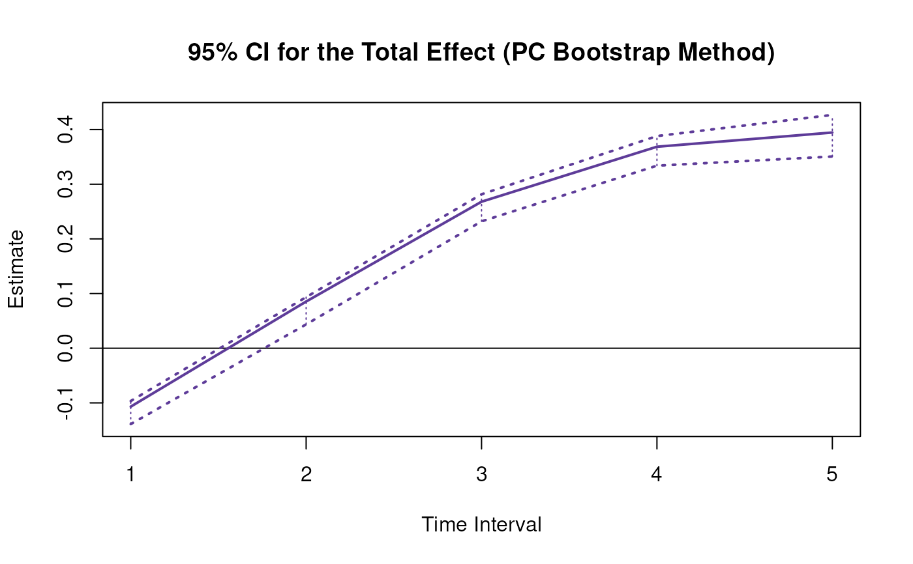
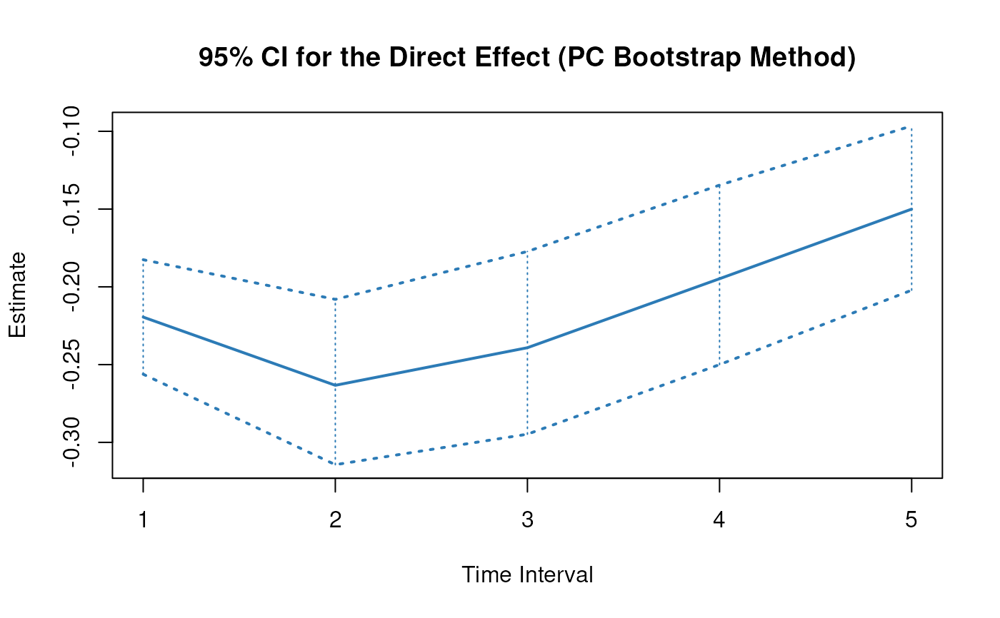
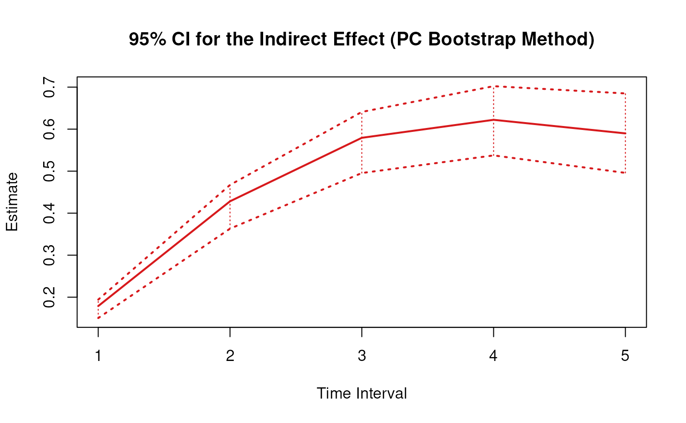
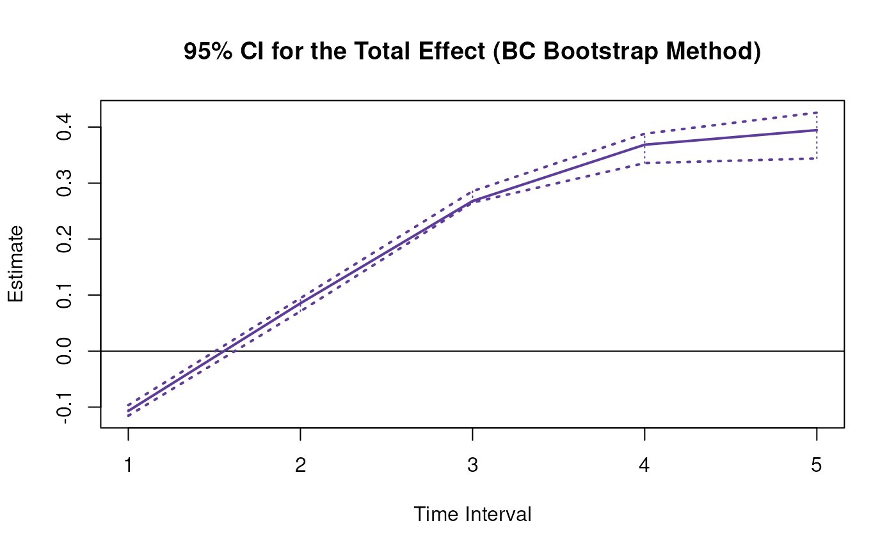
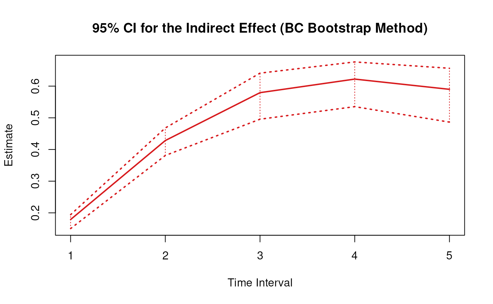
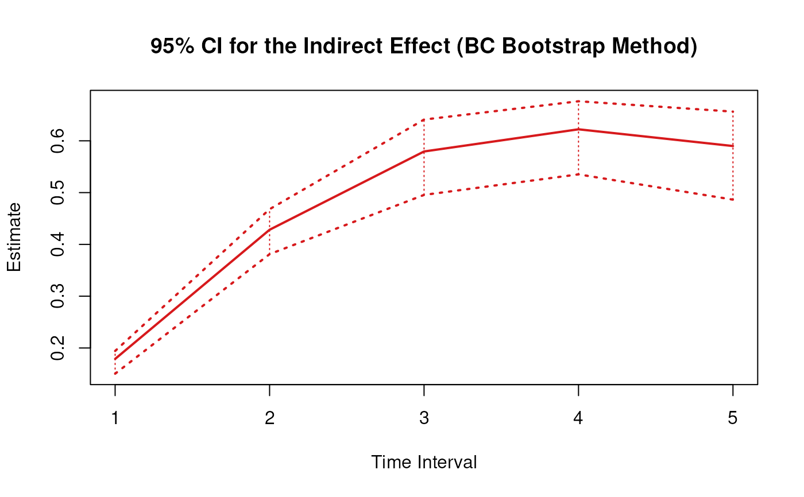

Bootstrap Sampling Distribution of Standardized Total, Direct, and Indirect Effects of X on Y Through M Over a Specific Time Interval or a Range of Time Intervals
Source:R/cTMed-boot-med-std.R
BootMedStd.RdThis function generates a bootstrap method sampling distribution of the standardized total, direct and indirect effects of the independent variable \(X\) on the dependent variable \(Y\) through mediator variables \(\mathbf{m}\) over a specific time interval \(\Delta t\) or a range of time intervals using the first-order stochastic differential equation model drift matrix \(\boldsymbol{\Phi}\).
Usage
BootMedStd(
phi,
sigma,
phi_hat,
sigma_hat,
delta_t,
from,
to,
med,
ncores = NULL,
tol = 0.01
)Arguments
- phi
List of numeric matrices. Each element of the list is a bootstrap estimate of the drift matrix (\(\boldsymbol{\Phi}\)).
- sigma
List of numeric matrices. Each element of the list is a bootstrap estimate of the process noise covariance matrix (\(\boldsymbol{\Sigma}\)).
- phi_hat
Numeric matrix. The estimated drift matrix (\(\hat{\boldsymbol{\Phi}}\)) from the original data set.
phi_hatshould have row and column names pertaining to the variables in the system.- sigma_hat
Numeric matrix. The estimated process noise covariance matrix (\(\hat{\boldsymbol{\Sigma}}\)) from the original data set.
- delta_t
Numeric. Time interval (\(\Delta t\)).
- from
Character string. Name of the independent variable \(X\) in
phi.- to
Character string. Name of the dependent variable \(Y\) in
phi.- med
Character vector. Name/s of the mediator variable/s in
phi.- ncores
Positive integer. Number of cores to use. If
ncores = NULL, use a single core. Consider using multiple cores when number of replicationsRis a large value.- tol
Numeric. Smallest possible time interval to allow.
Value
Returns an object
of class ctmedboot which is a list with the following elements:
- call
Function call.
- args
Function arguments.
- fun
Function used ("BootMedStd").
- output
A list with length of
length(delta_t).
Each element in the output list has the following elements:
- est
A vector of standardized total, direct, and indirect effects.
- thetahatstar
A matrix of bootstrap standardized total, direct, and indirect effects.
Details
See TotalStd(),
DirectStd(), and
IndirectStd() for more details.
References
Bollen, K. A. (1987). Total, direct, and indirect effects in structural equation models. Sociological Methodology, 17, 37. doi:10.2307/271028
Deboeck, P. R., & Preacher, K. J. (2015). No need to be discrete: A method for continuous time mediation analysis. Structural Equation Modeling: A Multidisciplinary Journal, 23 (1), 61–75. doi:10.1080/10705511.2014.973960
Ryan, O., & Hamaker, E. L. (2021). Time to intervene: A continuous-time approach to network analysis and centrality. Psychometrika, 87 (1), 214–252. doi:10.1007/s11336-021-09767-0
See also
Other Continuous Time Mediation Functions:
BootBeta(),
BootBetaStd(),
BootIndirectCentral(),
BootMed(),
BootTotalCentral(),
DeltaBeta(),
DeltaBetaStd(),
DeltaIndirectCentral(),
DeltaMed(),
DeltaMedStd(),
DeltaTotalCentral(),
Direct(),
DirectStd(),
Indirect(),
IndirectCentral(),
IndirectStd(),
MCBeta(),
MCBetaStd(),
MCIndirectCentral(),
MCMed(),
MCMedStd(),
MCPhi(),
MCPhiSigma(),
MCTotalCentral(),
Med(),
MedStd(),
PosteriorBeta(),
PosteriorIndirectCentral(),
PosteriorMed(),
PosteriorTotalCentral(),
Total(),
TotalCentral(),
TotalStd(),
Trajectory()
Examples
# \donttest{
library(bootStateSpace)
# prepare parameters
## number of individuals
n <- 50
## time points
time <- 100
delta_t <- 0.10
## dynamic structure
p <- 3
mu0 <- rep(x = 0, times = p)
sigma0 <- matrix(
data = c(
1.0,
0.2,
0.2,
0.2,
1.0,
0.2,
0.2,
0.2,
1.0
),
nrow = p
)
sigma0_l <- t(chol(sigma0))
mu <- rep(x = 0, times = p)
phi <- matrix(
data = c(
-0.357,
0.771,
-0.450,
0.0,
-0.511,
0.729,
0,
0,
-0.693
),
nrow = p
)
sigma <- matrix(
data = c(
0.24455556,
0.02201587,
-0.05004762,
0.02201587,
0.07067800,
0.01539456,
-0.05004762,
0.01539456,
0.07553061
),
nrow = p
)
sigma_l <- t(chol(sigma))
## measurement model
k <- 3
nu <- rep(x = 0, times = k)
lambda <- diag(k)
theta <- 0.2 * diag(k)
theta_l <- t(chol(theta))
boot <- PBSSMOUFixed(
R = 10L, # use at least 1000 in actual research
path = getwd(),
prefix = "ou",
n = n,
time = time,
delta_t = delta_t,
mu0 = mu0,
sigma0_l = sigma0_l,
mu = mu,
phi = phi,
sigma_l = sigma_l,
nu = nu,
lambda = lambda,
theta_l = theta_l,
ncores = NULL, # consider using multiple cores
seed = 42
)
phi_hat <- phi
colnames(phi_hat) <- rownames(phi_hat) <- c("x", "m", "y")
sigma_hat <- sigma
phi <- extract(object = boot, what = "phi")
sigma <- extract(object = boot, what = "sigma")
# Specific time interval ----------------------------------------------------
BootMedStd(
phi = phi,
sigma = sigma,
phi_hat = phi_hat,
sigma_hat = sigma_hat,
delta_t = 1,
from = "x",
to = "y",
med = "m"
)
#>
#> Total, Direct, and Indirect Effects
#> type = pc
#> $`1`
#> interval est se R 2.5% 97.5%
#> total 1 -0.0821 0.0127 10 -0.1087 -0.0712
#> direct 1 -0.2195 0.0238 10 -0.2562 -0.1826
#> indirect 1 0.1374 0.0140 10 0.1113 0.1533
#>
# Range of time intervals ---------------------------------------------------
boot <- BootMedStd(
phi = phi,
sigma = sigma,
phi_hat = phi_hat,
sigma_hat = sigma_hat,
delta_t = 1:5,
from = "x",
to = "y",
med = "m"
)
plot(boot)



plot(boot, type = "bc") # bias-corrected

 
# Methods -------------------------------------------------------------------
# BootMedStd has a number of methods including
# print, summary, confint, and plot
print(boot)
#>
#> Total, Direct, and Indirect Effects
#> type = pc
#> $`1`
#> interval est se R 2.5% 97.5%
#> total 1 -0.0821 0.0127 10 -0.1087 -0.0712
#> direct 1 -0.2195 0.0238 10 -0.2562 -0.1826
#> indirect 1 0.1374 0.0140 10 0.1113 0.1533
#>
#> $`2`
#> interval est se R 2.5% 97.5%
#> total 2 0.0656 0.0135 10 0.0341 0.0733
#> direct 2 -0.2633 0.0361 10 -0.3144 -0.2081
#> indirect 2 0.3289 0.0367 10 0.2610 0.3721
#>
#> $`3`
#> interval est se R 2.5% 97.5%
#> total 3 0.2058 0.0209 10 0.1639 0.2255
#> direct 3 -0.2391 0.0416 10 -0.2947 -0.1773
#> indirect 3 0.4449 0.0561 10 0.3467 0.5131
#>
#> $`4`
#> interval est se R 2.5% 97.5%
#> total 4 0.2830 0.0305 10 0.2245 0.3184
#> direct 4 -0.1948 0.0417 10 -0.2500 -0.1346
#> indirect 4 0.4778 0.0678 10 0.3609 0.5626
#>
#> $`5`
#> interval est se R 2.5% 97.5%
#> total 5 0.303 0.0380 10 0.2333 0.3487
#> direct 5 -0.150 0.0382 10 -0.2022 -0.0965
#> indirect 5 0.453 0.0721 10 0.3313 0.5440
#>
summary(boot)
#> effect interval est se R 2.5% 97.5%
#> 1 total 1 -0.08208640 0.01268570 10 -0.10867279 -0.07119273
#> 2 direct 1 -0.21945905 0.02377334 10 -0.25618553 -0.18256794
#> 3 indirect 1 0.13737265 0.01398740 10 0.11129641 0.15327633
#> 4 total 2 0.06556253 0.01345026 10 0.03412108 0.07329555
#> 5 direct 2 -0.26331708 0.03608731 10 -0.31435724 -0.20807029
#> 6 indirect 2 0.32887961 0.03670639 10 0.26103324 0.37206472
#> 7 total 3 0.20580506 0.02085928 10 0.16394193 0.22551444
#> 8 direct 3 -0.23914297 0.04161858 10 -0.29474463 -0.17726904
#> 9 indirect 3 0.44494803 0.05609548 10 0.34672250 0.51305228
#> 10 total 4 0.28303029 0.03049804 10 0.22448338 0.31839234
#> 11 direct 4 -0.19479017 0.04165486 10 -0.25000806 -0.13461084
#> 12 indirect 4 0.47782046 0.06781477 10 0.36086930 0.56260137
#> 13 total 5 0.30299087 0.03803323 10 0.23334539 0.34871687
#> 14 direct 5 -0.15003307 0.03824713 10 -0.20215777 -0.09652769
#> 15 indirect 5 0.45302394 0.07211873 10 0.33128996 0.54399145
confint(boot, level = 0.95)
#> effect interval 2.5 % 97.5 %
#> 1 total 1 -0.10867279 -0.07119273
#> 2 direct 1 -0.25618553 -0.18256794
#> 3 indirect 1 0.11129641 0.15327633
#> 4 total 2 0.03412108 0.07329555
#> 5 direct 2 -0.31435724 -0.20807029
#> 6 indirect 2 0.26103324 0.37206472
#> 7 total 3 0.16394193 0.22551444
#> 8 direct 3 -0.29474463 -0.17726904
#> 9 indirect 3 0.34672250 0.51305228
#> 10 total 4 0.22448338 0.31839234
#> 11 direct 4 -0.25000806 -0.13461084
#> 12 indirect 4 0.36086930 0.56260137
#> 13 total 5 0.23334539 0.34871687
#> 14 direct 5 -0.20215777 -0.09652769
#> 15 indirect 5 0.33128996 0.54399145
print(boot, type = "bc") # bias-corrected
#>
#> Total, Direct, and Indirect Effects
#> type = bc
#> $`1`
#> interval est se R 2.5% 97.5%
#> total 1 -0.0821 0.0127 10 -0.1020 -0.0683
#> direct 1 -0.2195 0.0238 10 -0.2452 -0.1757
#> indirect 1 0.1374 0.0140 10 0.1113 0.1533
#>
#> $`2`
#> interval est se R 2.5% 97.5%
#> total 2 0.0656 0.0135 10 0.0440 0.0741
#> direct 2 -0.2633 0.0361 10 -0.3052 -0.1983
#> indirect 2 0.3289 0.0367 10 0.2527 0.3695
#>
#> $`3`
#> interval est se R 2.5% 97.5%
#> total 3 0.2058 0.0209 10 0.1639 0.2255
#> direct 3 -0.2391 0.0416 10 -0.2872 -0.1685
#> indirect 3 0.4449 0.0561 10 0.3277 0.4990
#>
#> $`4`
#> interval est se R 2.5% 97.5%
#> total 4 0.2830 0.0305 10 0.2141 0.3118
#> direct 4 -0.1948 0.0417 10 -0.2421 -0.1279
#> indirect 4 0.4778 0.0678 10 0.3389 0.5415
#>
#> $`5`
#> interval est se R 2.5% 97.5%
#> total 5 0.303 0.0380 10 0.2165 0.3334
#> direct 5 -0.150 0.0382 10 -0.1928 -0.0914
#> indirect 5 0.453 0.0721 10 0.3068 0.5106
#>
summary(boot, type = "bc")
#> effect interval est se R 2.5% 97.5%
#> 1 total 1 -0.08208640 0.01268570 10 -0.10202748 -0.06829755
#> 2 direct 1 -0.21945905 0.02377334 10 -0.24516549 -0.17565292
#> 3 indirect 1 0.13737265 0.01398740 10 0.11129641 0.15327633
#> 4 total 2 0.06556253 0.01345026 10 0.04398016 0.07411270
#> 5 direct 2 -0.26331708 0.03608731 10 -0.30522709 -0.19827816
#> 6 indirect 2 0.32887961 0.03670639 10 0.25267069 0.36945859
#> 7 total 3 0.20580506 0.02085928 10 0.16394193 0.22551444
#> 8 direct 3 -0.23914297 0.04161858 10 -0.28723448 -0.16854780
#> 9 indirect 3 0.44494803 0.05609548 10 0.32773921 0.49897454
#> 10 total 4 0.28303029 0.03049804 10 0.21407644 0.31176831
#> 11 direct 4 -0.19479017 0.04165486 10 -0.24209974 -0.12790969
#> 12 indirect 4 0.47782046 0.06781477 10 0.33892674 0.54150711
#> 13 total 5 0.30299087 0.03803323 10 0.21646252 0.33343473
#> 14 direct 5 -0.15003307 0.03824713 10 -0.19278021 -0.09141454
#> 15 indirect 5 0.45302394 0.07211873 10 0.30679185 0.51062083
confint(boot, level = 0.95, type = "bc")
#> effect interval 2.5 % 97.5 %
#> 1 total 1 -0.10202748 -0.06829755
#> 2 direct 1 -0.24516549 -0.17565292
#> 3 indirect 1 0.11129641 0.15327633
#> 4 total 2 0.04398016 0.07411270
#> 5 direct 2 -0.30522709 -0.19827816
#> 6 indirect 2 0.25267069 0.36945859
#> 7 total 3 0.16394193 0.22551444
#> 8 direct 3 -0.28723448 -0.16854780
#> 9 indirect 3 0.32773921 0.49897454
#> 10 total 4 0.21407644 0.31176831
#> 11 direct 4 -0.24209974 -0.12790969
#> 12 indirect 4 0.33892674 0.54150711
#> 13 total 5 0.21646252 0.33343473
#> 14 direct 5 -0.19278021 -0.09141454
#> 15 indirect 5 0.30679185 0.51062083
# }

# Methods -------------------------------------------------------------------
# BootMedStd has a number of methods including
# print, summary, confint, and plot
print(boot)
#>
#> Total, Direct, and Indirect Effects
#> type = pc
#> $`1`
#> interval est se R 2.5% 97.5%
#> total 1 -0.0821 0.0127 10 -0.1087 -0.0712
#> direct 1 -0.2195 0.0238 10 -0.2562 -0.1826
#> indirect 1 0.1374 0.0140 10 0.1113 0.1533
#>
#> $`2`
#> interval est se R 2.5% 97.5%
#> total 2 0.0656 0.0135 10 0.0341 0.0733
#> direct 2 -0.2633 0.0361 10 -0.3144 -0.2081
#> indirect 2 0.3289 0.0367 10 0.2610 0.3721
#>
#> $`3`
#> interval est se R 2.5% 97.5%
#> total 3 0.2058 0.0209 10 0.1639 0.2255
#> direct 3 -0.2391 0.0416 10 -0.2947 -0.1773
#> indirect 3 0.4449 0.0561 10 0.3467 0.5131
#>
#> $`4`
#> interval est se R 2.5% 97.5%
#> total 4 0.2830 0.0305 10 0.2245 0.3184
#> direct 4 -0.1948 0.0417 10 -0.2500 -0.1346
#> indirect 4 0.4778 0.0678 10 0.3609 0.5626
#>
#> $`5`
#> interval est se R 2.5% 97.5%
#> total 5 0.303 0.0380 10 0.2333 0.3487
#> direct 5 -0.150 0.0382 10 -0.2022 -0.0965
#> indirect 5 0.453 0.0721 10 0.3313 0.5440
#>
summary(boot)
#> effect interval est se R 2.5% 97.5%
#> 1 total 1 -0.08208640 0.01268570 10 -0.10867279 -0.07119273
#> 2 direct 1 -0.21945905 0.02377334 10 -0.25618553 -0.18256794
#> 3 indirect 1 0.13737265 0.01398740 10 0.11129641 0.15327633
#> 4 total 2 0.06556253 0.01345026 10 0.03412108 0.07329555
#> 5 direct 2 -0.26331708 0.03608731 10 -0.31435724 -0.20807029
#> 6 indirect 2 0.32887961 0.03670639 10 0.26103324 0.37206472
#> 7 total 3 0.20580506 0.02085928 10 0.16394193 0.22551444
#> 8 direct 3 -0.23914297 0.04161858 10 -0.29474463 -0.17726904
#> 9 indirect 3 0.44494803 0.05609548 10 0.34672250 0.51305228
#> 10 total 4 0.28303029 0.03049804 10 0.22448338 0.31839234
#> 11 direct 4 -0.19479017 0.04165486 10 -0.25000806 -0.13461084
#> 12 indirect 4 0.47782046 0.06781477 10 0.36086930 0.56260137
#> 13 total 5 0.30299087 0.03803323 10 0.23334539 0.34871687
#> 14 direct 5 -0.15003307 0.03824713 10 -0.20215777 -0.09652769
#> 15 indirect 5 0.45302394 0.07211873 10 0.33128996 0.54399145
confint(boot, level = 0.95)
#> effect interval 2.5 % 97.5 %
#> 1 total 1 -0.10867279 -0.07119273
#> 2 direct 1 -0.25618553 -0.18256794
#> 3 indirect 1 0.11129641 0.15327633
#> 4 total 2 0.03412108 0.07329555
#> 5 direct 2 -0.31435724 -0.20807029
#> 6 indirect 2 0.26103324 0.37206472
#> 7 total 3 0.16394193 0.22551444
#> 8 direct 3 -0.29474463 -0.17726904
#> 9 indirect 3 0.34672250 0.51305228
#> 10 total 4 0.22448338 0.31839234
#> 11 direct 4 -0.25000806 -0.13461084
#> 12 indirect 4 0.36086930 0.56260137
#> 13 total 5 0.23334539 0.34871687
#> 14 direct 5 -0.20215777 -0.09652769
#> 15 indirect 5 0.33128996 0.54399145
print(boot, type = "bc") # bias-corrected
#>
#> Total, Direct, and Indirect Effects
#> type = bc
#> $`1`
#> interval est se R 2.5% 97.5%
#> total 1 -0.0821 0.0127 10 -0.1020 -0.0683
#> direct 1 -0.2195 0.0238 10 -0.2452 -0.1757
#> indirect 1 0.1374 0.0140 10 0.1113 0.1533
#>
#> $`2`
#> interval est se R 2.5% 97.5%
#> total 2 0.0656 0.0135 10 0.0440 0.0741
#> direct 2 -0.2633 0.0361 10 -0.3052 -0.1983
#> indirect 2 0.3289 0.0367 10 0.2527 0.3695
#>
#> $`3`
#> interval est se R 2.5% 97.5%
#> total 3 0.2058 0.0209 10 0.1639 0.2255
#> direct 3 -0.2391 0.0416 10 -0.2872 -0.1685
#> indirect 3 0.4449 0.0561 10 0.3277 0.4990
#>
#> $`4`
#> interval est se R 2.5% 97.5%
#> total 4 0.2830 0.0305 10 0.2141 0.3118
#> direct 4 -0.1948 0.0417 10 -0.2421 -0.1279
#> indirect 4 0.4778 0.0678 10 0.3389 0.5415
#>
#> $`5`
#> interval est se R 2.5% 97.5%
#> total 5 0.303 0.0380 10 0.2165 0.3334
#> direct 5 -0.150 0.0382 10 -0.1928 -0.0914
#> indirect 5 0.453 0.0721 10 0.3068 0.5106
#>
summary(boot, type = "bc")
#> effect interval est se R 2.5% 97.5%
#> 1 total 1 -0.08208640 0.01268570 10 -0.10202748 -0.06829755
#> 2 direct 1 -0.21945905 0.02377334 10 -0.24516549 -0.17565292
#> 3 indirect 1 0.13737265 0.01398740 10 0.11129641 0.15327633
#> 4 total 2 0.06556253 0.01345026 10 0.04398016 0.07411270
#> 5 direct 2 -0.26331708 0.03608731 10 -0.30522709 -0.19827816
#> 6 indirect 2 0.32887961 0.03670639 10 0.25267069 0.36945859
#> 7 total 3 0.20580506 0.02085928 10 0.16394193 0.22551444
#> 8 direct 3 -0.23914297 0.04161858 10 -0.28723448 -0.16854780
#> 9 indirect 3 0.44494803 0.05609548 10 0.32773921 0.49897454
#> 10 total 4 0.28303029 0.03049804 10 0.21407644 0.31176831
#> 11 direct 4 -0.19479017 0.04165486 10 -0.24209974 -0.12790969
#> 12 indirect 4 0.47782046 0.06781477 10 0.33892674 0.54150711
#> 13 total 5 0.30299087 0.03803323 10 0.21646252 0.33343473
#> 14 direct 5 -0.15003307 0.03824713 10 -0.19278021 -0.09141454
#> 15 indirect 5 0.45302394 0.07211873 10 0.30679185 0.51062083
confint(boot, level = 0.95, type = "bc")
#> effect interval 2.5 % 97.5 %
#> 1 total 1 -0.10202748 -0.06829755
#> 2 direct 1 -0.24516549 -0.17565292
#> 3 indirect 1 0.11129641 0.15327633
#> 4 total 2 0.04398016 0.07411270
#> 5 direct 2 -0.30522709 -0.19827816
#> 6 indirect 2 0.25267069 0.36945859
#> 7 total 3 0.16394193 0.22551444
#> 8 direct 3 -0.28723448 -0.16854780
#> 9 indirect 3 0.32773921 0.49897454
#> 10 total 4 0.21407644 0.31176831
#> 11 direct 4 -0.24209974 -0.12790969
#> 12 indirect 4 0.33892674 0.54150711
#> 13 total 5 0.21646252 0.33343473
#> 14 direct 5 -0.19278021 -0.09141454
#> 15 indirect 5 0.30679185 0.51062083
# }